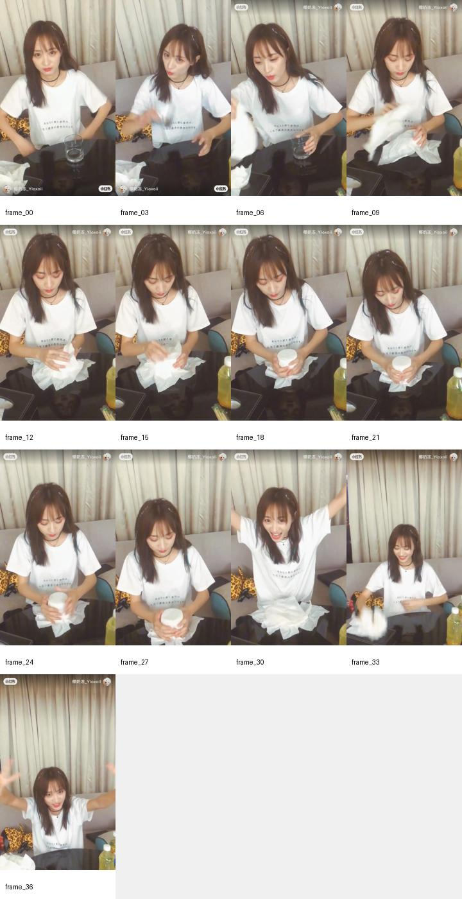

“现在，婷婷来查寝啦。手机放低一点，眼睛也休息一下。今天辛苦了，不开心的事情先交给夜晚保管，明天醒来再慢慢解决。晚安，T3，今晚要睡个很甜很甜的觉。”
语气：轻、慢、贴近耳语；最后“很甜很甜”可以笑一下。
用于补充晚安语音、起床铃语音、官宣 ID、生日 ID 的趣味脚本与拍摄 demo。整体建议走“温柔陪伴 + 认真搞笑 + 轻量饭撒”的路线，避免太土味或太用力。
这一版按“别人做过、但适合黄婷婷复用”来找，不再局限她本人。实际跑下来，晚安和起床铃最容易出圈的，不是纯温柔念稿，而是“有记忆点的声线 / 角色感 / 轻情景剧”；魔术和开场小梗则以“低门槛、立刻看懂、能在 3 秒内完成”为优先。
| 方向 | 可参考示例 | 热度 | 可借鉴点 |
|---|---|---|---|
| 晚安语音 / 角色感 | 太乙真人的铃声来了（晚安版） | 5260 赞 / 2282 藏 / 155 评 | 这类晚安内容火点不在“晚安”两个字本身，而在鲜明声线和角色口头禅。评论里已经有人顺势要起床铃、高德语音包，说明“一个记忆点声线，延展多种语音素材”是成立的。黄婷婷可以借这个结构，但换成她自己的温柔吐槽或可爱口癖。 |
| 晚安语音 / 极简口令 | 晚安玛卡巴卡！ | 502 赞 / 249 藏 / 71 评 | 说明“短、重复、带一点童趣催眠感”的晚安素材是有人存的。适合黄婷婷做成 8-12 秒短句版，比如一两句抓包式查寝，最后落到“快睡觉”。 |
| 起床铃 / 搞笑叫醒 | 谁好人室友设置这个闹铃为起床铃声～ | 2.8 万赞 / 9298 藏 / 313 评 | 这条很典型：不是温柔叫醒，而是“明知道会闹，但还是想设”的反差感。评论里有人说会弹射起床，也有人说喜欢的歌设成闹铃就不喜欢了。说明起床铃的传播点可以更偏洗脑、搞笑、轻折磨，黄婷婷版可以用“还不起床啊”“再不起我就吃掉你的零食”这种宠粉式小威胁。 |
| 起床铃 / 专属称呼 | 给你的专属起床铃声~快起床啦小懒虫 | 151 赞 / 72 藏 / 48 评 | 虽然体量不算最大，但方向很准：第二人称直呼、轻撒娇、叫早里带宠感。适合黄婷婷保留“专属感”和“只对你说”的语气。 |
| 魔术 / 爱心类 | 魔术教学—纸巾变爱心❤️ | 7923 赞 / 5731 藏 / 37 评 | 非常适合迁移。描述里直接写了“纸巾变成爱心、小球等物品”，评论高频是“军训才艺表演靠这个活了”“一分钟要五六个小魔术”。这说明观众买账的不是专业魔术，而是低门槛、马上能学会、适合镜头前做一次的小把戏。黄婷婷可以把纸巾换成零食包装、祝福纸条或比心。 |
| 魔术 / 速成感 | 这个魔术真的很神奇，看完瞬间学会😏 | 1.57 万赞 / 5116 藏 / 202 评 | 标题本身就证明了观众偏爱“看完我也能学会”的魔术，而不是复杂长流程。官宣 ID 和生日 ID 里，魔术只需要承担“开场抓一下人”和“自然带出零食”的功能，不需要做成完整表演。 |
| 开场小梗 / 可爱钩子 | 可爱风开头转场素材 / 用 5 步让你的 vlog 开头出圈 | 4737 赞 / 2638 藏 / 1384 评；3992 赞 / 2828 藏 / 115 评 | 这两类不是偶像口播本身，但验证了一个事实：开头 1-3 秒先给动作或情绪，再进入正题，比直接自我介绍更抓人。所以“假装施法结果变出比心”“挡脸探头后接一句冷笑话”这类开头是成立的。 |
“现在，婷婷来查寝啦。手机放低一点，眼睛也休息一下。今天辛苦了，不开心的事情先交给夜晚保管，明天醒来再慢慢解决。晚安，T3，今晚要睡个很甜很甜的觉。”
语气：轻、慢、贴近耳语；最后“很甜很甜”可以笑一下。
“还没睡吗？被我发现了哦。再刷五分钟是不可以的，再想我五分钟……也不可以。乖啦，闭上眼睛。今天已经很努力了，剩下的交给梦。晚安，明天也要见。”
语气：前半段带一点“抓包”，后半段放软。
“起床啦，起床啦，还不起床啊？我数到三，再不起我就要把你的零食吃掉了。一、二、三，好，醒了就给自己一个今天也很厉害的表情。早安，快去发光吧。”
语气：开头要有情景剧感，结尾给正向能量，贴合粉丝对闹钟样例的反馈。
“早安，快醒醒。今天的第一口快乐我已经帮你准备好了，但是你不起床的话，它就只能先被我吃掉了。三秒钟，坐起来，喝口水，然后带着好运出门。”
语气：更适合品牌 ID，可顺手带出零食。
拿品牌纸袋或礼物袋，先让镜头看到“好像是空的”，念一句“今天我要宣布一件很重要的事”，挥一下手，从袋子里变出产品零食。
拿一包产品零食，假装“施法”，从包装袋或礼物盒里抽出一条折叠祝福纸，最后露出零食。
“阿黄大魔术师”样例的结构是：镜头前展示道具 → 用布遮盖 → 认真操作 → 揭晓成功 → 开心庆祝。这个节奏可以直接换成零食产品。

本地抽帧仅作内部动作节奏参考，不建议外发。
动作：双手对镜头搓空气，认真说“我今天学会了一个魔术，可以把空气变甜。”停半秒，突然比心。
台词：“变好了，刚刚那一下是给你的。收到了吗？收到了就听我说正事。”
动作：拿零食轻轻挡一下脸，再探头出来。
台词：“知道为什么要听黄婷婷说话吗？因为我的‘婷’，就是让你先‘停’一下。停一下，看看我，顺便收下今天的快乐。”
备注：上述小红书热度为 2026-05-06 当天抓取到的站内公开互动数据，后续可能会变化。